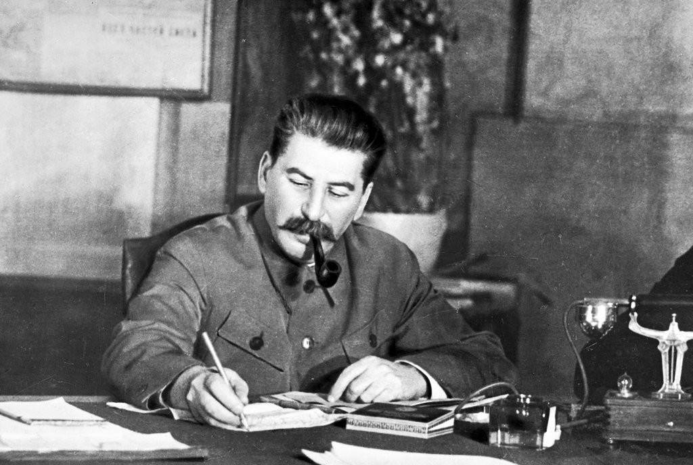
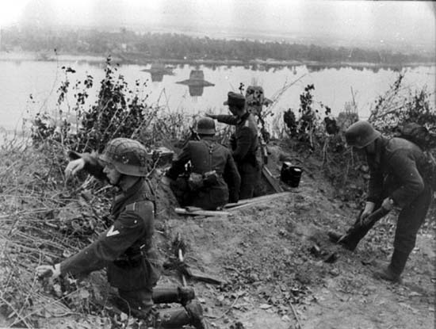
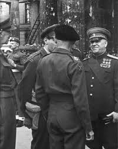

Битва за Днепр, принятое в отечественной военно-исторической литературе название совокупности оборонительных и наступательных операций советских войск, проведённых в августе – декабре 1943 г. в целях освобождения Левобережной Украины, Донбасса, форсирования Днепра и захвата плацдармов на его правом берегу.
По директивам Ставки Верховного Главнокомандования (ВГК), полученным еще в ходе битвы под Курском, войскам Красной Армии предстояло развернуть наступление на фронте от Великих Лук до Азовского моря. Основные усилия по-прежнему сосредоточивались на юго-западном (главном) стратегическом направлении.
Войска Центрального, Воронежского, Степного, Юго-Западного и Южного фронтов имели задачу разгромить главные силы врага на южном крыле советско-германского фронта, освободить Левобережную Украину и Донбасс, выйти к Днепру, форсировать его и захватить плацдармы на правом берегу реки.
Директива Ставки Верховного Главнокомандования с целью выхода к р. Днепр. ЦАМО. Ф. 236. Оп. 2673. Д. 5. Л. 10, 10об. Ф. 3. Оп. 11556. Д. 13. Л. 233, 234. На западном стратегическом направлении войска Калининского, Западного и Брянского фронтов готовились к наступлению с целью разгрома группы армий «Центр».
Единого мнения о способах разгрома противника у советского командования не было. Маршал Советского Союза Г.К. Жуков предлагал, и в этом его поддерживал первый заместитель начальника Генерального штаба генерал армии А.И. Антонов, провести операции по отсечению и окружению значительных группировок врага, в частности в Донбассе.

Однако Верховный главнокомандующий И.В. Сталин не разделял эту точку зрения. Он полагал, что для реализации такого замысла понадобится значительное время, и противник успеет организовать оборону на подступах к Днепру. Поэтому Верховный Главнокомандующий требовал скорее отбросить немецкие соединения с занимаемых ими рубежей фронтальными ударами. Обосновывалось это тем, что, по данным разведки, немецкие войска готовили оборону на линии реки Нарва, Псков, Витебск, Орел, рек Сож, Днепр и Молочная.
В результате было принято решение на проведение ряда последовательных операций с нанесением ударов на нескольких направлениях и развертыванием наступления на широком фронте. Это приводило к рассечению группировки противника на части, которые утрачивали оперативную связь между собой, что обеспечивало разгром и уничтожение каждой из них в отдельности.
Верховное командование вермахта после поражения под Курском и провала операции «Цитадель» решило перейти к обороне на всем восточном фронте. Немецким войскам был отдан приказ прочно удерживать занимаемые рубежи, любой ценой остановить наступление советских войск и сохранить за собой важнейшие экономические районы. Одновременно немецкое командование разработало план обороны, предусматривавший создание от Балтийского до Черного моря хорошо укрепленного рубежа — «Восточного вала», который проходил севернее Чудского озера, по р. Нарва, восточнее Пскова, Невеля, Витебска, Орши, далее через Гомель, по рекам Сож и Днепр в его среднем течении и по р. Молочная. Была создана развитая в инженерном отношении, насыщенная противотанковыми и противопехотными средствами оборона. В местах, где, по мнению немецкого командования, советские войска могли наметить переправу, была подготовлена наиболее прочная многополосная оборона. В ряде районов на левом берегу Днепра противник построил сильные предмостные укрепления. Особо мощные укрепления были в районах Кременчуга, Запорожья и Никополя.
«Восточный вал» должен был, по замыслу германского руководства, стать непреодолимым барьером для Красной Армии и остановить ее продвижение на запад. «...Скорее Днепр потечет обратно, нежели русские преодолеют его...», — заявил Гитлер на одном из партийных совещаний в Берлине, после того как Красная Армия, одержав победу под Курском, широким фронтом развернула наступление на запад.

На юго-западном направлении советским войскам противостояла сильная группировка противника. В ее состав входили пять армий (4 из группы армий «Юг» и одна из группы армий «Центр»). Эта группировка насчитывала 1,24 млн солдат и офицеров, 12 тыс. орудий и минометов, около 2,1 тыс. танков и штурмовых орудий и до 2 тыс. самолетов. Советские войска имели здесь более 2,6 млн человек, свыше 51,2 тыс. орудий и минометов, свыше 2,4 тыс. танков и самоходных артиллерийских установок, около 2,9 тыс. самолетов. Советские войска превосходили противника по личному составу в 2,1 раза, по танкам — в 1,1, по самолетам — в 1,4 раза и только по орудиям и минометам — в 4 раза. Подготовка фронтов к новому наступлению проходила в очень сложных условиях. После 1,5-месячных тяжелых и непрерывных боев под Курском войска оторвались на большое расстояние от своих баз снабжения, израсходовав за это время большую часть имевшихся у них материальных средств. Железнодорожная сеть только еще восстанавливалась. Подвозить войскам все необходимое предстояло автотранспортом, а его хронически не хватало. Битва за Днепр началась на разных направлениях и состояла из нескольких объединенных общим замыслом Ставки ВГК операций групп фронтов.
Согласно замыслу Ставки ВГК фронтам юго-западного направления ставились задачи нанести фронтальные рассекающие удары по противнику, выйти к Днепру, форсировать его с ходу на широком фронте, захватить плацдармы и упредить противника в организации обороны на Правобережной Украине. Одновременно войска Западного, левого крыла Калининского, а также Брянского фронтов должны были наступать на смоленском и брянско-гомельском направлениях и тем самым лишить врага возможности перегруппировать силы на юг. В неразрывной связи с операциями Центрального, Воронежского и Степного фронтов проводилась и наступательная операция Юго-Западного и Южного фронтов в целях освобождения Донбасса.
{kind=link}
{kind=link}
{kind=link}
{kind=link}